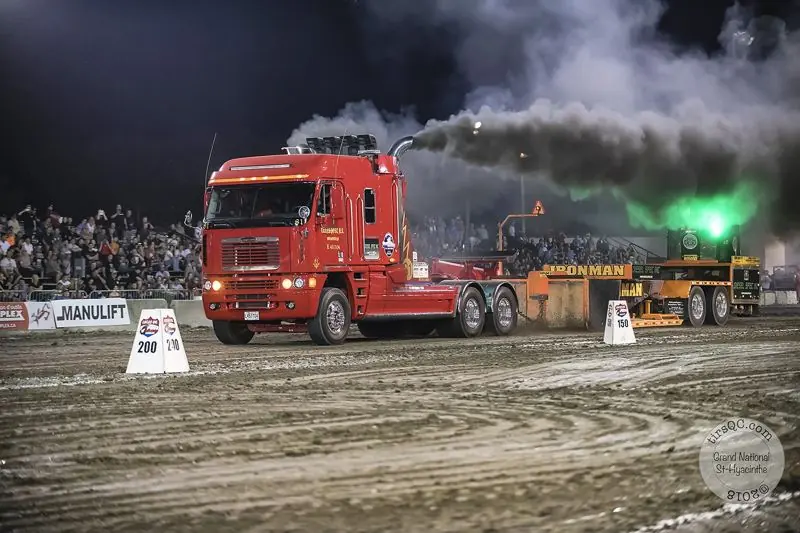
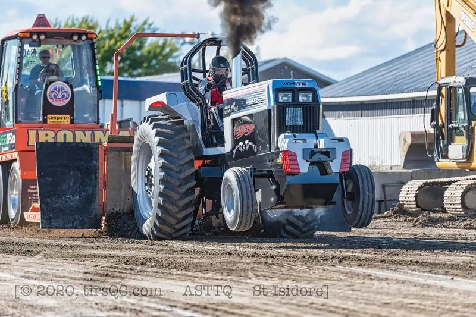
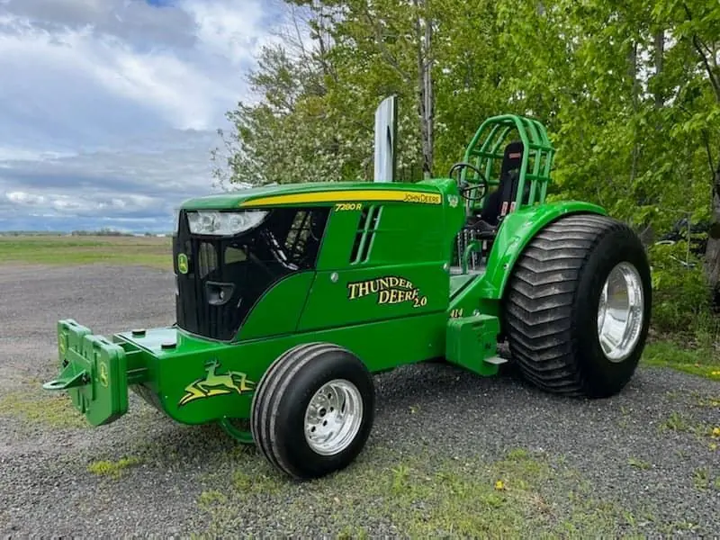
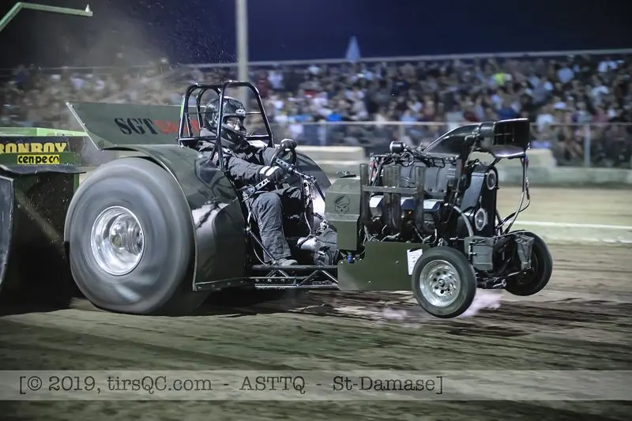
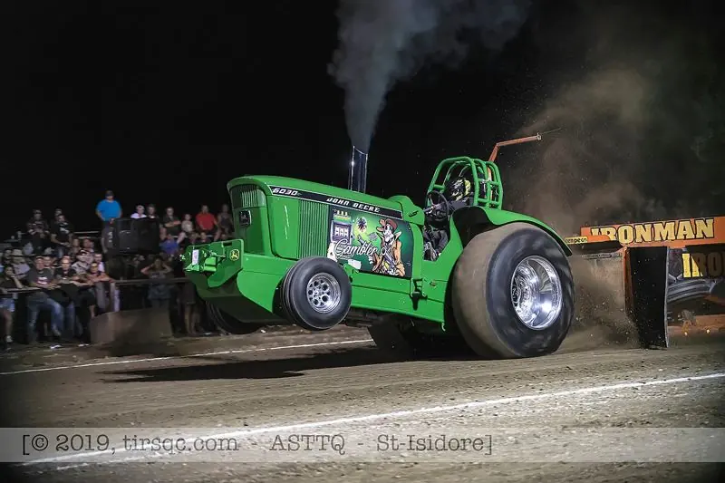
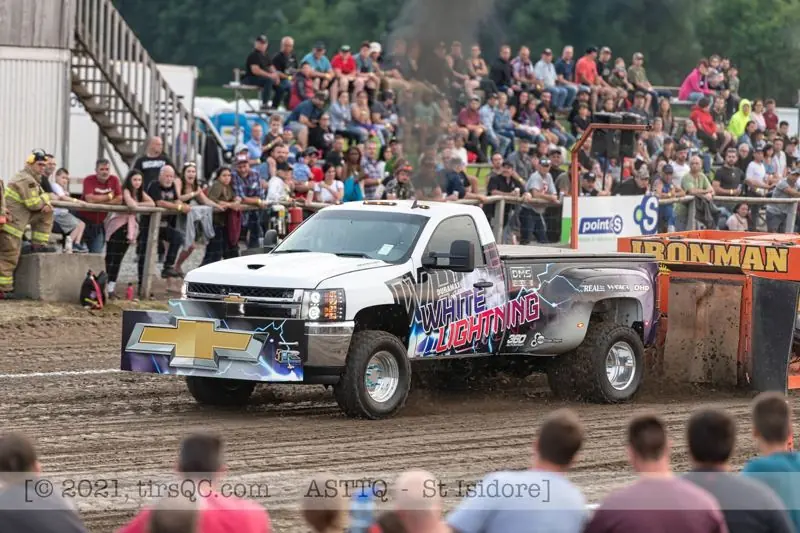

ASTTQ2 soirs
Tire de tracteurs
Deux soirs de compétition ASTTQ, le vendredi et le samedi de l'Expo. Super Stock, Pro Farm, 4x4 modifiés et semi-remorques.
Photo : tire de Saint-Isidore, 2019
Une soirée
de tire
L'ordre de passage du vendredi 19 juillet 2024. Il change d'un soir à l'autre.
- 4x4 modifiés
- Hot Farm
- Minis
- Pro Farm
- Mini Grand National
- Pro Stock
- Super Stock
- Camions semi
Les
pilotes 2024
La plus récente liste publiée, celle de 2024. Celle de 2027 s'ajoutera ici quand elle sera connue.

Giroux ExpressSylvain GirouxSuper Stock 
Argosy FreightlinerMario RacicotSemiPhoto prise au Grand National de St-Hyacinthe, 2018 
Toy FarmerEric BoissonneaultHot Farm 
Thunder Deere 2.0Steeven et Kellyane LagrangeHot Farm 
Sgt. SlaughterJonathan Van HorneMini
| Tracteur | Pilote | Classe |
|---|---|---|
| The Gambler | Steeven Lagrange | Super Stock |
| Red Smoker | Steve Gagné | Super Stock |
| On the Road Again | Carol et Mathieu Benoit | 4x4 |
| Hell Raiser | Richard Chartrand | 4x4 modifié |
| Big Red | Nicolas Francoeur | Semi |
| Dark Horse | Tom Noonan | Pro Farm |
| — | Steven Gagné | Pro Farm |
Vos
billets
En ligne ou à la porte, les soirs de tire. Les dates 2027 seront annoncées avec la programmation, au printemps.
Prix 2026, par soir
- Adulte
- 30 $
- 12 à 15 ans
- 20 $
- Moins de 12 ans
- Gratuit
- Forfait 2 soirs
- 50 $
En 2026 : vendredi 17 juillet à 18 h 30 et samedi 18 juillet à 18 h.
Billetterie en ligne : la vente ouvre avec l'annonce des dates 2027. Le bouton d'achat s'ajoutera ici.
- Sur place
- Nourriture et bar (alcool pour les 18 ans et plus).
- S'il pleut
- La tire est reportée au dimanche.
- L'entrée de l'Expo
- Reste gratuite. Le billet donne accès à la tire.
L'ambiance au bord de la piste



Photos : ELZEPHOTO, tirsQC.com et archives de l'Expo. Certaines photos de pilotes ont été prises à d'autres événements de l'ASTTQ. Voir toutes les photos